Give a direction that reached its budget more, and carry on from its next step, in one action.
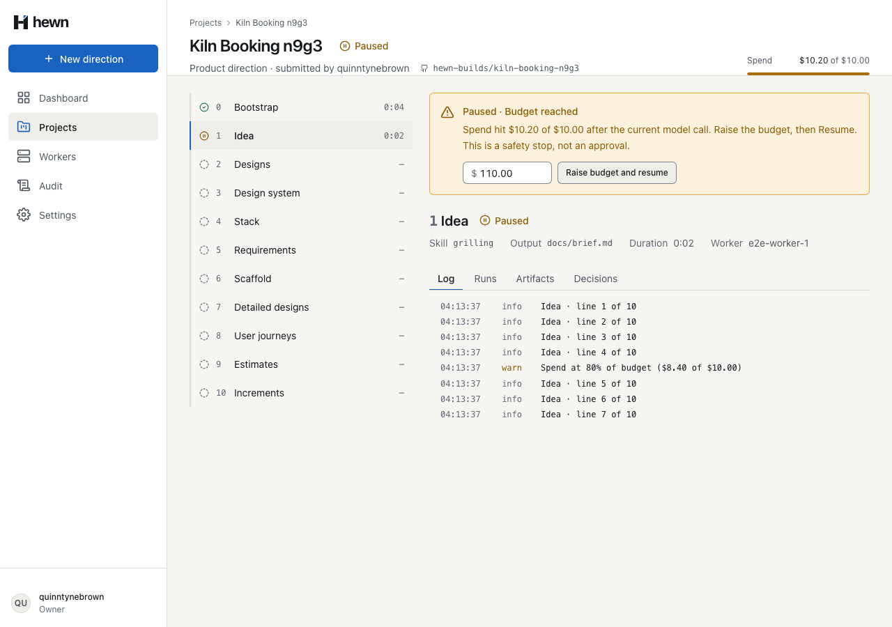
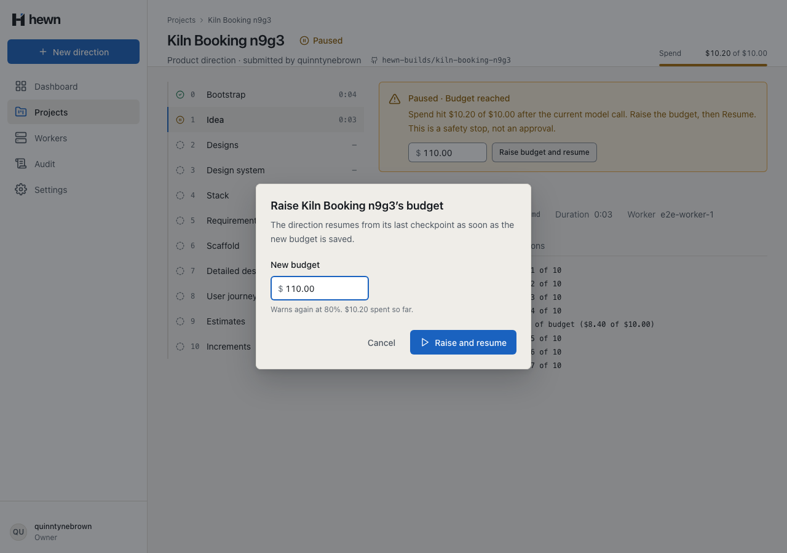
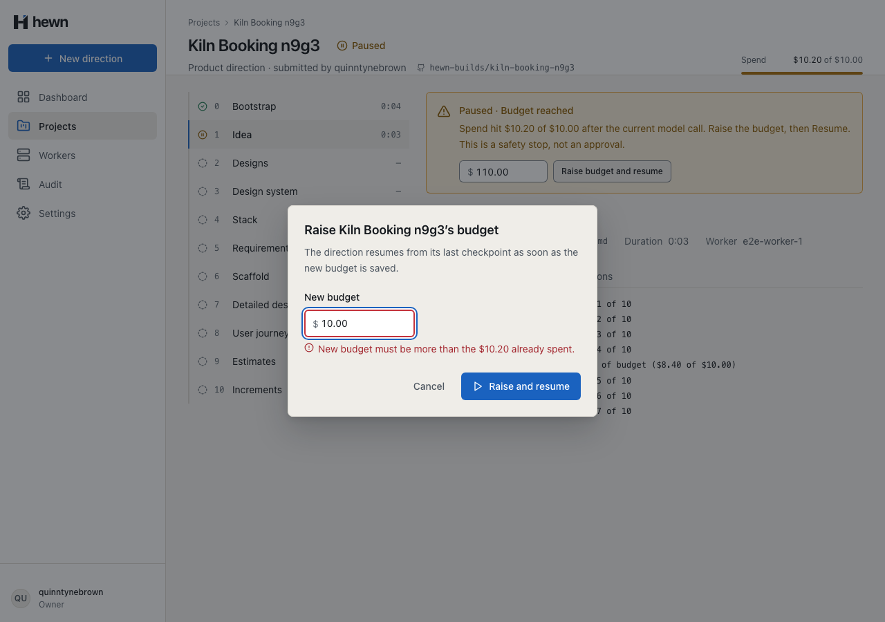
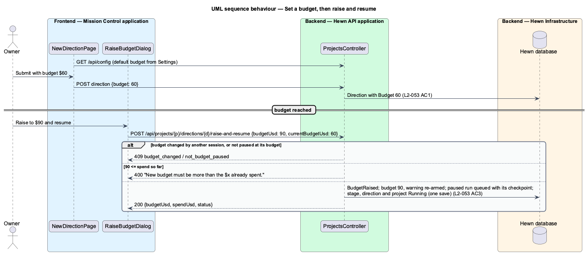
// A stale budget means another session already acted: say so before anything else.
if (direction.BudgetUsd != command.CurrentBudgetUsd)
{
throw new ConflictException("budget_changed", "Another session changed this budget a moment ago.");
}
if (!direction.IsPausedAtBudget)
{
throw new ConflictException("not_budget_paused", "The direction is not paused at its budget.");
}
var budget = Math.Round(command.BudgetUsd, 2, MidpointRounding.AwayFromZero);
if (budget <= direction.SpendUsd)
var run = await db.Runs.SingleAsync(r => r.DirectionId == direction.Id && r.Status == RunStatus.Paused, cancellationToken);
await events.AppendAsync(
project.Id,
BudgetRaised,
new { directionId = direction.Id, budgetUsd = budget, spendUsd = direction.SpendUsd, raisedBy = user.Login },
cancellationToken);
await pipeline.OnBudgetRaisedAsync(run, project, direction, budget, cancellationToken);
await db.SaveChangesAsync(cancellationToken);
await events.PublishAsync(cancellationToken);
return new RaiseAndResumeResult(direction.Id, direction.BudgetUsd, direction.SpendUsd, direction.Status.ToString());
public async Task OnBudgetRaisedAsync(Run run, Project project, Direction direction, decimal budgetUsd, CancellationToken cancellationToken)
{
run.Resume();
var stage = direction.RaiseBudgetAndResume(budgetUsd, run.Stage);
await AppendStageAsync(direction, stage, cancellationToken);
await AppendDirectionAsync(direction, cancellationToken);
project.ChangeStatus(ProjectStatus.Running);
await AppendProjectAsync(project, cancellationToken);
}
protected save(): void {
if (this.saving()) return;
this.attempted.set(true);
this.serverError.set(null);
if (raiseBudgetError(this.budget(), this.data.spendUsd)) return;
this.saving.set(true);
this.failure.set(null);
this.api
.raiseAndResume(this.data.projectId, this.data.directionId, {
budgetUsd: parseBudget(this.budget())!,
currentBudgetUsd: this.data.budgetUsd,
})
.subscribe({
next: (result) => this.ref.close(result),
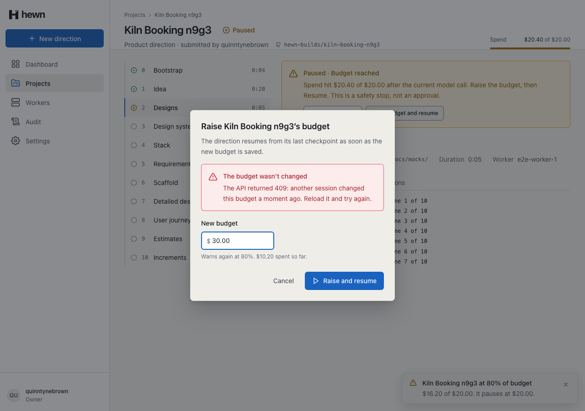
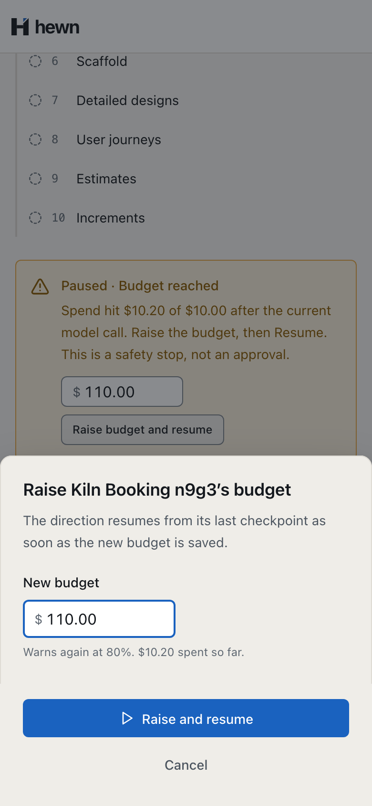
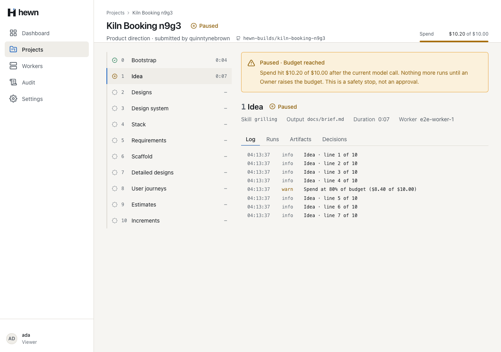
const viewer = new ProjectPage(viewerPage);
await viewerPage.goto(projectUrl);
await expect(viewer.budgetReachedCallout).toBeVisible();
await expect(viewer.raiseBudget).toHaveCount(0);
const projectId = new URL(projectUrl).pathname.split('/').at(-1)!;
const directionId = (
(await (await viewerPage.request.get(`/api/projects/${projectId}`)).json()) as {
directions: { id: string }[];
}
).directions[0]!.id;
const forbidden = await viewerPage.request.post(
`/api/projects/${projectId}/directions/${directionId}/raise-and-resume`,
{ data: { budgetUsd: 50, currentBudgetUsd: 10 }, headers: { 'X-XSRF-TOKEN': await xsrf(viewerPage) } },
);
expect(forbidden.status()).toBe(403);
[Fact]
public async Task Raising_the_budget_above_the_spend_resumes_the_direction_from_its_next_step_in_one_action()
{
var paused = await PausedAtBudgetAsync();
var before = (await EventsAsync(paused.Owner, paused.ProjectId)).Count;
var response = await RaiseAsync(paused.Owner, paused.ProjectId, paused.DirectionId, 20m);
Assert.Equal(HttpStatusCode.OK, response.StatusCode);
var body = await HewnClient.ReadJsonAsync(response);
Assert.Equal(20m, body.GetProperty("budgetUsd").GetDecimal());
Assert.Equal("Running", body.GetProperty("status").GetString());
7 new, real API
Dialog rules, BudgetRaised
Pipeline 13 · behaviour 15 · a11y 11 · visual 7
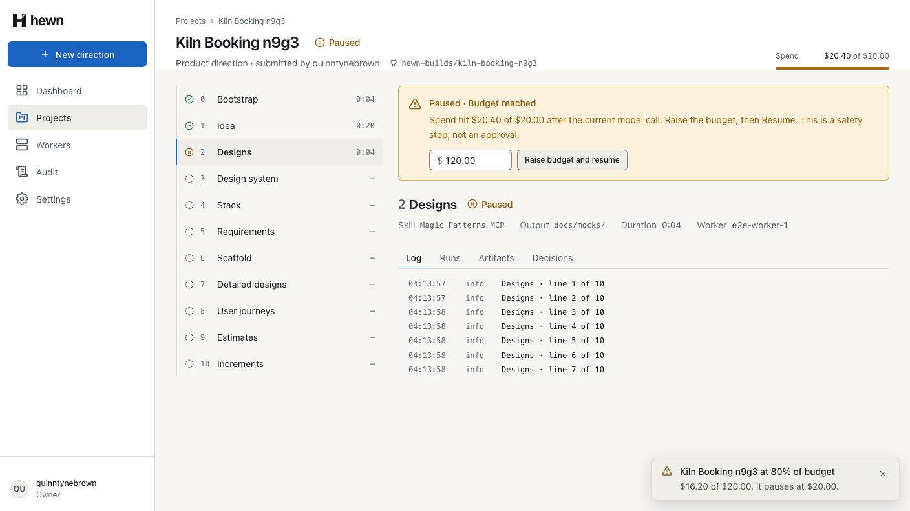
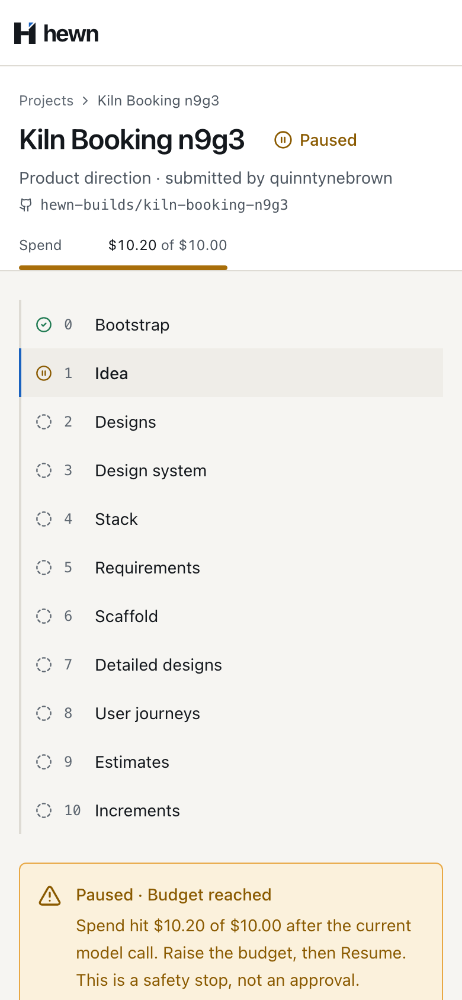
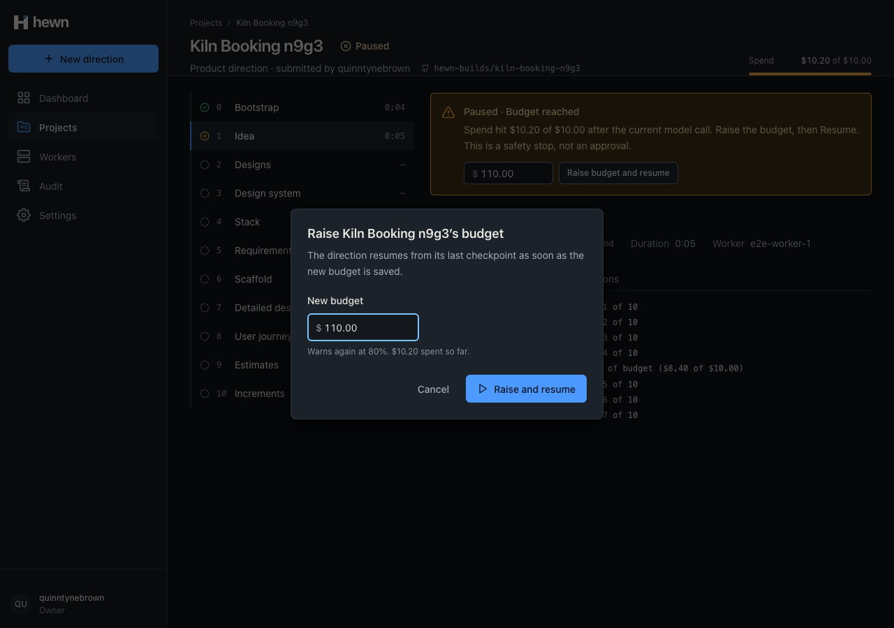
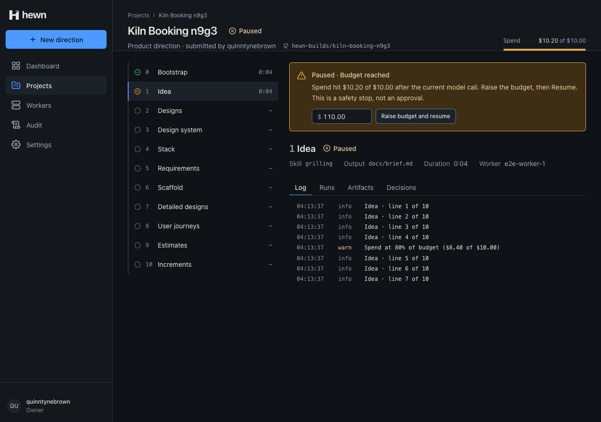